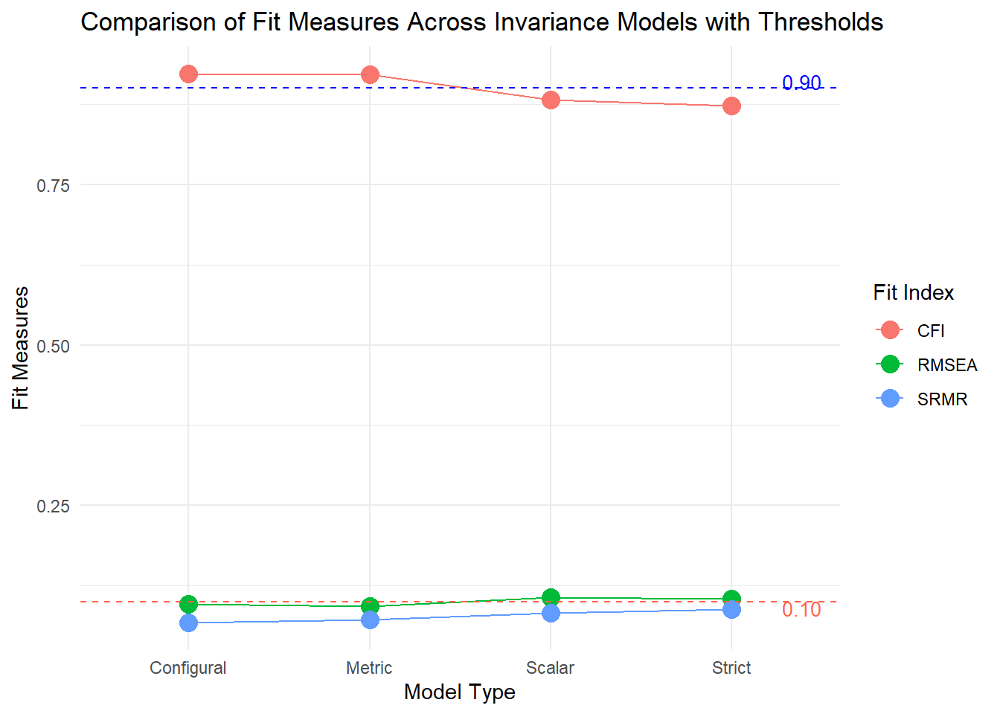

![]()
id sex ageyr agemo school grade x1 x2 x3 x4 x5 x6
1 1 1 13 1 Pasteur 7 3.333333 7.75 0.375 2.333333 5.75 1.2857143
2 2 2 13 7 Pasteur 7 5.333333 5.25 2.125 1.666667 3.00 1.2857143
3 3 2 13 1 Pasteur 7 4.500000 5.25 1.875 1.000000 1.75 0.4285714
4 4 1 13 2 Pasteur 7 5.333333 7.75 3.000 2.666667 4.50 2.4285714
5 5 2 12 2 Pasteur 7 4.833333 4.75 0.875 2.666667 4.00 2.5714286
6 6 2 14 1 Pasteur 7 5.333333 5.00 2.250 1.000000 3.00 0.8571429
x7 x8 x9
1 3.391304 5.75 6.361111
2 3.782609 6.25 7.916667
3 3.260870 3.90 4.416667
4 3.000000 5.30 4.861111
5 3.695652 6.30 5.916667
6 4.347826 6.65 7.500000Introduction
Measurement invariance is critical because if a test is not invariant across groups, differences in test scores might reflect biases in how questions are interpreted. For instance, a math test may appear to show that boys score higher than girls, but this could be because certain items function differently for each group.
There are different levels of MI:
Configural Invariance: Tests whether the overall factor structure (i.e., the number and pattern of factors) is the same across groups. It is the smallest restrictive form of invariance. It allows us to conclude that the groups conceptualize the construct in the same way.
Metric (Weak) Invariance: Tests whether the factor loadings (the strength of the relationship between each item and the latent factor) are equal across groups. This ensures that the items are equally good indicators of the latent construct in all groups.
Scalar (Strong) Invariance: Tests whether item intercepts are equal across groups. Scalar invariance is necessary for comparing latent means between groups.
Strict Invariance: Tests whether item residual variances are equal across groups. It’s the strongest form of invariance, implying that the amount of measurement error is consistent across groups.
In the context of R, we can use structural equation modeling (SEM) to assess MI. The lavaan package provides a dataset (HolzingerSwineford1939) for several SEM analysis including MI. Let’s load the lavaan and HolzingerSwineford1939 data along with the semTools package for visualization.
Code
1. Understand the data
Let’s load the data and see the head of them:
The Holzinger and Swineford dataset contains data on students’ cognitive abilities, including variables like sex, age, and grade. It also includes information about the school of students. It includes several cognitive test scores (variables x1 to x9) that measure different abilities, which can be used to examine latent traits. These variables and code for the model is provided in the package’s own paper. The dataset measures three latent factors:
Visual (x1, x2, x3),
Textual (x4, x5, x6),
Speed (x7, x8, x9).
2. Fit the base model
Let’s specify the CFA model.
Code
HS.model <- ' visual =~ x1 + x2 + x3
textual =~ x4 + x5 + x6
speed =~ x7 + x8 + x9 'We fit the model using the entire dataset without considering groups. This step provides a baseline understanding of how well the model fits:
lavaan 0.6-19 ended normally after 35 iterations
Estimator ML
Optimization method NLMINB
Number of model parameters 21
Number of observations 301
Model Test User Model:
Test statistic 85.306
Degrees of freedom 24
P-value (Chi-square) 0.000
Model Test Baseline Model:
Test statistic 918.852
Degrees of freedom 36
P-value 0.000
User Model versus Baseline Model:
Comparative Fit Index (CFI) 0.931
Tucker-Lewis Index (TLI) 0.896
Loglikelihood and Information Criteria:
Loglikelihood user model (H0) -3737.745
Loglikelihood unrestricted model (H1) -3695.092
Akaike (AIC) 7517.490
Bayesian (BIC) 7595.339
Sample-size adjusted Bayesian (SABIC) 7528.739
Root Mean Square Error of Approximation:
RMSEA 0.092
90 Percent confidence interval - lower 0.071
90 Percent confidence interval - upper 0.114
P-value H_0: RMSEA <= 0.050 0.001
P-value H_0: RMSEA >= 0.080 0.840
Standardized Root Mean Square Residual:
SRMR 0.065
Parameter Estimates:
Standard errors Standard
Information Expected
Information saturated (h1) model Structured
Latent Variables:
Estimate Std.Err z-value P(>|z|)
visual =~
x1 1.000
x2 0.554 0.100 5.554 0.000
x3 0.729 0.109 6.685 0.000
textual =~
x4 1.000
x5 1.113 0.065 17.014 0.000
x6 0.926 0.055 16.703 0.000
speed =~
x7 1.000
x8 1.180 0.165 7.152 0.000
x9 1.082 0.151 7.155 0.000
Covariances:
Estimate Std.Err z-value P(>|z|)
visual ~~
textual 0.408 0.074 5.552 0.000
speed 0.262 0.056 4.660 0.000
textual ~~
speed 0.173 0.049 3.518 0.000
Variances:
Estimate Std.Err z-value P(>|z|)
.x1 0.549 0.114 4.833 0.000
.x2 1.134 0.102 11.146 0.000
.x3 0.844 0.091 9.317 0.000
.x4 0.371 0.048 7.779 0.000
.x5 0.446 0.058 7.642 0.000
.x6 0.356 0.043 8.277 0.000
.x7 0.799 0.081 9.823 0.000
.x8 0.488 0.074 6.573 0.000
.x9 0.566 0.071 8.003 0.000
visual 0.809 0.145 5.564 0.000
textual 0.979 0.112 8.737 0.000
speed 0.384 0.086 4.451 0.000Chi-Square Test (85.306, df = 24, p < 0.001): The significant result indicates that the model doesn’t perfectly fit the data, but Chi-square is highly sensitive to sample size.
CFI (0.931): This value suggests a reasonably good fit (values above 0.90 are typically considered acceptable).
RMSEA (0.092): The RMSEA is below the threshold for a good fit (<0.10).
SRMR (0.065): This is below 0.10.
All latent variables (visual, textual, speed) show significant factor loadings for their respective observed variables (e.g., x1–x3 for visual), indicating that these items effectively measure their intended constructs.
Covariances between latent variables (visual, textual, speed) are significant, indicating meaningful relationships between these cognitive abilities.
3. Measurement Invariance
Now we move on to measurement invariance.
3.1. Configural Invariance
The first step is testing configural invariance, which checks whether the factor structure (i.e., the number of factors and their loadings) is the same across groups. We’ll use school as the grouping variable:
lavaan 0.6-19 ended normally after 57 iterations
Estimator ML
Optimization method NLMINB
Number of model parameters 60
Number of observations per group:
Pasteur 156
Grant-White 145
Model Test User Model:
Test statistic 115.851
Degrees of freedom 48
P-value (Chi-square) 0.000
Test statistic for each group:
Pasteur 64.309
Grant-White 51.542
Model Test Baseline Model:
Test statistic 957.769
Degrees of freedom 72
P-value 0.000
User Model versus Baseline Model:
Comparative Fit Index (CFI) 0.923
Tucker-Lewis Index (TLI) 0.885
Loglikelihood and Information Criteria:
Loglikelihood user model (H0) -3682.198
Loglikelihood unrestricted model (H1) -3624.272
Akaike (AIC) 7484.395
Bayesian (BIC) 7706.822
Sample-size adjusted Bayesian (SABIC) 7516.536
Root Mean Square Error of Approximation:
RMSEA 0.097
90 Percent confidence interval - lower 0.075
90 Percent confidence interval - upper 0.120
P-value H_0: RMSEA <= 0.050 0.001
P-value H_0: RMSEA >= 0.080 0.897
Standardized Root Mean Square Residual:
SRMR 0.068
Parameter Estimates:
Standard errors Standard
Information Expected
Information saturated (h1) model Structured
Group 1 [Pasteur]:
Latent Variables:
Estimate Std.Err z-value P(>|z|)
visual =~
x1 1.000
x2 0.394 0.122 3.220 0.001
x3 0.570 0.140 4.076 0.000
textual =~
x4 1.000
x5 1.183 0.102 11.613 0.000
x6 0.875 0.077 11.421 0.000
speed =~
x7 1.000
x8 1.125 0.277 4.057 0.000
x9 0.922 0.225 4.104 0.000
Covariances:
Estimate Std.Err z-value P(>|z|)
visual ~~
textual 0.479 0.106 4.531 0.000
speed 0.185 0.077 2.397 0.017
textual ~~
speed 0.182 0.069 2.628 0.009
Intercepts:
Estimate Std.Err z-value P(>|z|)
.x1 4.941 0.095 52.249 0.000
.x2 5.984 0.098 60.949 0.000
.x3 2.487 0.093 26.778 0.000
.x4 2.823 0.092 30.689 0.000
.x5 3.995 0.105 38.183 0.000
.x6 1.922 0.079 24.321 0.000
.x7 4.432 0.087 51.181 0.000
.x8 5.563 0.078 71.214 0.000
.x9 5.418 0.079 68.440 0.000
Variances:
Estimate Std.Err z-value P(>|z|)
.x1 0.298 0.232 1.286 0.198
.x2 1.334 0.158 8.464 0.000
.x3 0.989 0.136 7.271 0.000
.x4 0.425 0.069 6.138 0.000
.x5 0.456 0.086 5.292 0.000
.x6 0.290 0.050 5.780 0.000
.x7 0.820 0.125 6.580 0.000
.x8 0.510 0.116 4.406 0.000
.x9 0.680 0.104 6.516 0.000
visual 1.097 0.276 3.967 0.000
textual 0.894 0.150 5.963 0.000
speed 0.350 0.126 2.778 0.005
Group 2 [Grant-White]:
Latent Variables:
Estimate Std.Err z-value P(>|z|)
visual =~
x1 1.000
x2 0.736 0.155 4.760 0.000
x3 0.925 0.166 5.583 0.000
textual =~
x4 1.000
x5 0.990 0.087 11.418 0.000
x6 0.963 0.085 11.377 0.000
speed =~
x7 1.000
x8 1.226 0.187 6.569 0.000
x9 1.058 0.165 6.429 0.000
Covariances:
Estimate Std.Err z-value P(>|z|)
visual ~~
textual 0.408 0.098 4.153 0.000
speed 0.276 0.076 3.639 0.000
textual ~~
speed 0.222 0.073 3.022 0.003
Intercepts:
Estimate Std.Err z-value P(>|z|)
.x1 4.930 0.095 51.696 0.000
.x2 6.200 0.092 67.416 0.000
.x3 1.996 0.086 23.195 0.000
.x4 3.317 0.093 35.625 0.000
.x5 4.712 0.096 48.986 0.000
.x6 2.469 0.094 26.277 0.000
.x7 3.921 0.086 45.819 0.000
.x8 5.488 0.087 63.174 0.000
.x9 5.327 0.085 62.571 0.000
Variances:
Estimate Std.Err z-value P(>|z|)
.x1 0.715 0.126 5.676 0.000
.x2 0.899 0.123 7.339 0.000
.x3 0.557 0.103 5.409 0.000
.x4 0.315 0.065 4.870 0.000
.x5 0.419 0.072 5.812 0.000
.x6 0.406 0.069 5.880 0.000
.x7 0.600 0.091 6.584 0.000
.x8 0.401 0.094 4.249 0.000
.x9 0.535 0.089 6.010 0.000
visual 0.604 0.160 3.762 0.000
textual 0.942 0.152 6.177 0.000
speed 0.461 0.118 3.910 0.000The configural invariance model provides a baseline for comparing the factor structure across groups (schools: Pasteur and Grant-White).
-
Fit Indices:
The CFI of 0.923 and TLI of 0.885 suggest a reasonably good fit but not excellent.
The RMSEA of 0.097 is slightly below the recommended 0.10 threshold.
The SRMR of 0.068 is within an acceptable range, below 0.10, indicating a good fit.
These results show that the overall factor structure is consistent across the two schools, but there’s room for improvement in model fit.
3.2. Metric Invariance
Next, we would proceed to test metric invariance, where we constrain the factor loadings across groups to assess if the model behaves equivalently in both schools.
lavaan 0.6-19 ended normally after 42 iterations
Estimator ML
Optimization method NLMINB
Number of model parameters 60
Number of equality constraints 6
Number of observations per group:
Pasteur 156
Grant-White 145
Model Test User Model:
Test statistic 124.044
Degrees of freedom 54
P-value (Chi-square) 0.000
Test statistic for each group:
Pasteur 68.825
Grant-White 55.219
Model Test Baseline Model:
Test statistic 957.769
Degrees of freedom 72
P-value 0.000
User Model versus Baseline Model:
Comparative Fit Index (CFI) 0.921
Tucker-Lewis Index (TLI) 0.895
Loglikelihood and Information Criteria:
Loglikelihood user model (H0) -3686.294
Loglikelihood unrestricted model (H1) -3624.272
Akaike (AIC) 7480.587
Bayesian (BIC) 7680.771
Sample-size adjusted Bayesian (SABIC) 7509.514
Root Mean Square Error of Approximation:
RMSEA 0.093
90 Percent confidence interval - lower 0.071
90 Percent confidence interval - upper 0.114
P-value H_0: RMSEA <= 0.050 0.001
P-value H_0: RMSEA >= 0.080 0.845
Standardized Root Mean Square Residual:
SRMR 0.072
Parameter Estimates:
Standard errors Standard
Information Expected
Information saturated (h1) model Structured
Group 1 [Pasteur]:
Latent Variables:
Estimate Std.Err z-value P(>|z|)
visual =~
x1 1.000
x2 (.p2.) 0.599 0.100 5.979 0.000
x3 (.p3.) 0.784 0.108 7.267 0.000
textual =~
x4 1.000
x5 (.p5.) 1.083 0.067 16.049 0.000
x6 (.p6.) 0.912 0.058 15.785 0.000
speed =~
x7 1.000
x8 (.p8.) 1.201 0.155 7.738 0.000
x9 (.p9.) 1.038 0.136 7.629 0.000
Covariances:
Estimate Std.Err z-value P(>|z|)
visual ~~
textual 0.416 0.097 4.271 0.000
speed 0.169 0.064 2.643 0.008
textual ~~
speed 0.176 0.061 2.882 0.004
Intercepts:
Estimate Std.Err z-value P(>|z|)
.x1 4.941 0.093 52.991 0.000
.x2 5.984 0.100 60.096 0.000
.x3 2.487 0.094 26.465 0.000
.x4 2.823 0.093 30.371 0.000
.x5 3.995 0.101 39.714 0.000
.x6 1.922 0.081 23.711 0.000
.x7 4.432 0.086 51.540 0.000
.x8 5.563 0.078 71.087 0.000
.x9 5.418 0.079 68.153 0.000
Variances:
Estimate Std.Err z-value P(>|z|)
.x1 0.551 0.137 4.010 0.000
.x2 1.258 0.155 8.117 0.000
.x3 0.882 0.128 6.884 0.000
.x4 0.434 0.070 6.238 0.000
.x5 0.508 0.082 6.229 0.000
.x6 0.266 0.050 5.294 0.000
.x7 0.849 0.114 7.468 0.000
.x8 0.515 0.095 5.409 0.000
.x9 0.658 0.096 6.865 0.000
visual 0.805 0.171 4.714 0.000
textual 0.913 0.137 6.651 0.000
speed 0.305 0.078 3.920 0.000
Group 2 [Grant-White]:
Latent Variables:
Estimate Std.Err z-value P(>|z|)
visual =~
x1 1.000
x2 (.p2.) 0.599 0.100 5.979 0.000
x3 (.p3.) 0.784 0.108 7.267 0.000
textual =~
x4 1.000
x5 (.p5.) 1.083 0.067 16.049 0.000
x6 (.p6.) 0.912 0.058 15.785 0.000
speed =~
x7 1.000
x8 (.p8.) 1.201 0.155 7.738 0.000
x9 (.p9.) 1.038 0.136 7.629 0.000
Covariances:
Estimate Std.Err z-value P(>|z|)
visual ~~
textual 0.437 0.099 4.423 0.000
speed 0.314 0.079 3.958 0.000
textual ~~
speed 0.226 0.072 3.144 0.002
Intercepts:
Estimate Std.Err z-value P(>|z|)
.x1 4.930 0.097 50.763 0.000
.x2 6.200 0.091 68.379 0.000
.x3 1.996 0.085 23.455 0.000
.x4 3.317 0.092 35.950 0.000
.x5 4.712 0.100 47.173 0.000
.x6 2.469 0.091 27.248 0.000
.x7 3.921 0.086 45.555 0.000
.x8 5.488 0.087 63.257 0.000
.x9 5.327 0.085 62.786 0.000
Variances:
Estimate Std.Err z-value P(>|z|)
.x1 0.645 0.127 5.084 0.000
.x2 0.933 0.121 7.732 0.000
.x3 0.605 0.096 6.282 0.000
.x4 0.329 0.062 5.279 0.000
.x5 0.384 0.073 5.270 0.000
.x6 0.437 0.067 6.576 0.000
.x7 0.599 0.090 6.651 0.000
.x8 0.406 0.089 4.541 0.000
.x9 0.532 0.086 6.202 0.000
visual 0.722 0.161 4.490 0.000
textual 0.906 0.136 6.646 0.000
speed 0.475 0.109 4.347 0.000CFI (0.921) and TLI (0.895) are still relatively good, indicating that the constrained model is acceptable.
RMSEA (0.093) suggests an acceptable fit.
SRMR (0.072) is still below 0.08, indicating acceptable fit.
The comparison between the configural and metric models shows a slight decline in fit, but the invariance model still seems reasonably supported. This indicates that the factor loadings are equivalent across the two schools, allowing us to meaningfully compare relationships between items and latent factors.
3.3. Scalar Invariance
Next, we would proceed with testing scalar invariance.
lavaan 0.6-19 ended normally after 60 iterations
Estimator ML
Optimization method NLMINB
Number of model parameters 63
Number of equality constraints 15
Number of observations per group:
Pasteur 156
Grant-White 145
Model Test User Model:
Test statistic 164.103
Degrees of freedom 60
P-value (Chi-square) 0.000
Test statistic for each group:
Pasteur 90.210
Grant-White 73.892
Model Test Baseline Model:
Test statistic 957.769
Degrees of freedom 72
P-value 0.000
User Model versus Baseline Model:
Comparative Fit Index (CFI) 0.882
Tucker-Lewis Index (TLI) 0.859
Loglikelihood and Information Criteria:
Loglikelihood user model (H0) -3706.323
Loglikelihood unrestricted model (H1) -3624.272
Akaike (AIC) 7508.647
Bayesian (BIC) 7686.588
Sample-size adjusted Bayesian (SABIC) 7534.359
Root Mean Square Error of Approximation:
RMSEA 0.107
90 Percent confidence interval - lower 0.088
90 Percent confidence interval - upper 0.127
P-value H_0: RMSEA <= 0.050 0.000
P-value H_0: RMSEA >= 0.080 0.989
Standardized Root Mean Square Residual:
SRMR 0.082
Parameter Estimates:
Standard errors Standard
Information Expected
Information saturated (h1) model Structured
Group 1 [Pasteur]:
Latent Variables:
Estimate Std.Err z-value P(>|z|)
visual =~
x1 1.000
x2 (.p2.) 0.576 0.101 5.713 0.000
x3 (.p3.) 0.798 0.112 7.146 0.000
textual =~
x4 1.000
x5 (.p5.) 1.120 0.066 16.965 0.000
x6 (.p6.) 0.932 0.056 16.608 0.000
speed =~
x7 1.000
x8 (.p8.) 1.130 0.145 7.786 0.000
x9 (.p9.) 1.009 0.132 7.667 0.000
Covariances:
Estimate Std.Err z-value P(>|z|)
visual ~~
textual 0.410 0.095 4.293 0.000
speed 0.178 0.066 2.687 0.007
textual ~~
speed 0.180 0.062 2.900 0.004
Intercepts:
Estimate Std.Err z-value P(>|z|)
.x1 (.25.) 5.001 0.090 55.760 0.000
.x2 (.26.) 6.151 0.077 79.905 0.000
.x3 (.27.) 2.271 0.083 27.387 0.000
.x4 (.28.) 2.778 0.087 31.953 0.000
.x5 (.29.) 4.035 0.096 41.858 0.000
.x6 (.30.) 1.926 0.079 24.426 0.000
.x7 (.31.) 4.242 0.073 57.975 0.000
.x8 (.32.) 5.630 0.072 78.531 0.000
.x9 (.33.) 5.465 0.069 79.016 0.000
Variances:
Estimate Std.Err z-value P(>|z|)
.x1 0.555 0.139 3.983 0.000
.x2 1.296 0.158 8.186 0.000
.x3 0.944 0.136 6.929 0.000
.x4 0.445 0.069 6.430 0.000
.x5 0.502 0.082 6.136 0.000
.x6 0.263 0.050 5.264 0.000
.x7 0.888 0.120 7.416 0.000
.x8 0.541 0.095 5.706 0.000
.x9 0.654 0.096 6.805 0.000
visual 0.796 0.172 4.641 0.000
textual 0.879 0.131 6.694 0.000
speed 0.322 0.082 3.914 0.000
Group 2 [Grant-White]:
Latent Variables:
Estimate Std.Err z-value P(>|z|)
visual =~
x1 1.000
x2 (.p2.) 0.576 0.101 5.713 0.000
x3 (.p3.) 0.798 0.112 7.146 0.000
textual =~
x4 1.000
x5 (.p5.) 1.120 0.066 16.965 0.000
x6 (.p6.) 0.932 0.056 16.608 0.000
speed =~
x7 1.000
x8 (.p8.) 1.130 0.145 7.786 0.000
x9 (.p9.) 1.009 0.132 7.667 0.000
Covariances:
Estimate Std.Err z-value P(>|z|)
visual ~~
textual 0.427 0.097 4.417 0.000
speed 0.329 0.082 4.006 0.000
textual ~~
speed 0.236 0.073 3.224 0.001
Intercepts:
Estimate Std.Err z-value P(>|z|)
.x1 (.25.) 5.001 0.090 55.760 0.000
.x2 (.26.) 6.151 0.077 79.905 0.000
.x3 (.27.) 2.271 0.083 27.387 0.000
.x4 (.28.) 2.778 0.087 31.953 0.000
.x5 (.29.) 4.035 0.096 41.858 0.000
.x6 (.30.) 1.926 0.079 24.426 0.000
.x7 (.31.) 4.242 0.073 57.975 0.000
.x8 (.32.) 5.630 0.072 78.531 0.000
.x9 (.33.) 5.465 0.069 79.016 0.000
visual -0.148 0.122 -1.211 0.226
textual 0.576 0.117 4.918 0.000
speed -0.177 0.090 -1.968 0.049
Variances:
Estimate Std.Err z-value P(>|z|)
.x1 0.654 0.128 5.094 0.000
.x2 0.964 0.123 7.812 0.000
.x3 0.641 0.101 6.316 0.000
.x4 0.343 0.062 5.534 0.000
.x5 0.376 0.073 5.133 0.000
.x6 0.437 0.067 6.559 0.000
.x7 0.625 0.095 6.574 0.000
.x8 0.434 0.088 4.914 0.000
.x9 0.522 0.086 6.102 0.000
visual 0.708 0.160 4.417 0.000
textual 0.870 0.131 6.659 0.000
speed 0.505 0.115 4.379 0.000The scalar invariance model (which adds constraints on intercepts) shows the following:
Fit indices: The CFI has dropped to 0.882 and TLI to 0.859, indicating a lower fit compared to the metric model. RMSEA increased to 0.107, which exceeds the acceptable threshold (0.10), suggesting a less satisfactory fit.
SRMR is now 0.082.
Overall, the model fit deteriorates, indicating that the intercepts might not be fully invariant across the two groups.
3.4. Strict Invariance
Finally lets test the strict invariance.
lavaan 0.6-19 ended normally after 59 iterations
Estimator ML
Optimization method NLMINB
Number of model parameters 63
Number of equality constraints 24
Number of observations per group:
Pasteur 156
Grant-White 145
Model Test User Model:
Test statistic 181.511
Degrees of freedom 69
P-value (Chi-square) 0.000
Test statistic for each group:
Pasteur 93.093
Grant-White 88.419
Model Test Baseline Model:
Test statistic 957.769
Degrees of freedom 72
P-value 0.000
User Model versus Baseline Model:
Comparative Fit Index (CFI) 0.873
Tucker-Lewis Index (TLI) 0.867
Loglikelihood and Information Criteria:
Loglikelihood user model (H0) -3715.028
Loglikelihood unrestricted model (H1) -3624.272
Akaike (AIC) 7508.055
Bayesian (BIC) 7652.632
Sample-size adjusted Bayesian (SABIC) 7528.947
Root Mean Square Error of Approximation:
RMSEA 0.104
90 Percent confidence interval - lower 0.086
90 Percent confidence interval - upper 0.123
P-value H_0: RMSEA <= 0.050 0.000
P-value H_0: RMSEA >= 0.080 0.984
Standardized Root Mean Square Residual:
SRMR 0.088
Parameter Estimates:
Standard errors Standard
Information Expected
Information saturated (h1) model Structured
Group 1 [Pasteur]:
Latent Variables:
Estimate Std.Err z-value P(>|z|)
visual =~
x1 1.000
x2 (.p2.) 0.591 0.104 5.691 0.000
x3 (.p3.) 0.837 0.116 7.182 0.000
textual =~
x4 1.000
x5 (.p5.) 1.125 0.066 17.134 0.000
x6 (.p6.) 0.933 0.056 16.752 0.000
speed =~
x7 1.000
x8 (.p8.) 1.121 0.151 7.424 0.000
x9 (.p9.) 1.028 0.140 7.356 0.000
Covariances:
Estimate Std.Err z-value P(>|z|)
visual ~~
textual 0.367 0.094 3.915 0.000
speed 0.174 0.065 2.666 0.008
textual ~~
speed 0.176 0.062 2.827 0.005
Intercepts:
Estimate Std.Err z-value P(>|z|)
.x1 (.25.) 5.012 0.090 55.461 0.000
.x2 (.26.) 6.133 0.077 79.814 0.000
.x3 (.27.) 2.314 0.083 28.037 0.000
.x4 (.28.) 2.784 0.086 32.193 0.000
.x5 (.29.) 4.029 0.096 41.812 0.000
.x6 (.30.) 1.927 0.081 23.747 0.000
.x7 (.31.) 4.271 0.073 58.428 0.000
.x8 (.32.) 5.622 0.072 78.502 0.000
.x9 (.33.) 5.461 0.070 78.438 0.000
Variances:
Estimate Std.Err z-value P(>|z|)
.x1 (.10.) 0.638 0.102 6.249 0.000
.x2 (.11.) 1.130 0.102 11.124 0.000
.x3 (.12.) 0.771 0.090 8.608 0.000
.x4 (.13.) 0.383 0.047 8.095 0.000
.x5 (.14.) 0.435 0.057 7.616 0.000
.x6 (.15.) 0.354 0.042 8.341 0.000
.x7 (.16.) 0.769 0.080 9.571 0.000
.x8 (.17.) 0.501 0.071 7.021 0.000
.x9 (.18.) 0.576 0.069 8.353 0.000
visual 0.767 0.164 4.686 0.000
textual 0.894 0.131 6.827 0.000
speed 0.340 0.085 4.016 0.000
Group 2 [Grant-White]:
Latent Variables:
Estimate Std.Err z-value P(>|z|)
visual =~
x1 1.000
x2 (.p2.) 0.591 0.104 5.691 0.000
x3 (.p3.) 0.837 0.116 7.182 0.000
textual =~
x4 1.000
x5 (.p5.) 1.125 0.066 17.134 0.000
x6 (.p6.) 0.933 0.056 16.752 0.000
speed =~
x7 1.000
x8 (.p8.) 1.121 0.151 7.424 0.000
x9 (.p9.) 1.028 0.140 7.356 0.000
Covariances:
Estimate Std.Err z-value P(>|z|)
visual ~~
textual 0.422 0.095 4.446 0.000
speed 0.331 0.081 4.069 0.000
textual ~~
speed 0.236 0.074 3.194 0.001
Intercepts:
Estimate Std.Err z-value P(>|z|)
.x1 (.25.) 5.012 0.090 55.461 0.000
.x2 (.26.) 6.133 0.077 79.814 0.000
.x3 (.27.) 2.314 0.083 28.037 0.000
.x4 (.28.) 2.784 0.086 32.193 0.000
.x5 (.29.) 4.029 0.096 41.812 0.000
.x6 (.30.) 1.927 0.081 23.747 0.000
.x7 (.31.) 4.271 0.073 58.428 0.000
.x8 (.32.) 5.622 0.072 78.502 0.000
.x9 (.33.) 5.461 0.070 78.438 0.000
visual -0.157 0.120 -1.316 0.188
textual 0.575 0.118 4.888 0.000
speed -0.176 0.090 -1.958 0.050
Variances:
Estimate Std.Err z-value P(>|z|)
.x1 (.10.) 0.638 0.102 6.249 0.000
.x2 (.11.) 1.130 0.102 11.124 0.000
.x3 (.12.) 0.771 0.090 8.608 0.000
.x4 (.13.) 0.383 0.047 8.095 0.000
.x5 (.14.) 0.435 0.057 7.616 0.000
.x6 (.15.) 0.354 0.042 8.341 0.000
.x7 (.16.) 0.769 0.080 9.571 0.000
.x8 (.17.) 0.501 0.071 7.021 0.000
.x9 (.18.) 0.576 0.069 8.353 0.000
visual 0.657 0.150 4.379 0.000
textual 0.876 0.132 6.621 0.000
speed 0.478 0.116 4.138 0.000Fit Statistics:
Chi-square (181.511, df = 69, p < 0.001): Significant, indicating that strict invariance does not hold perfectly, but Chi-square is sensitive to large sample sizes.
CFI (0.873) and TLI (0.867): Both are below 0.90, indicating a moderate fit. These indices suggest some misfit when imposing strict invariance.
RMSEA (0.104): Exceeds the desired threshold of 0.10, suggesting that the model fit could be improved.
SRMR (0.088): Slightly below the 0.10 threshold.
Strict invariance constrains residuals to be equal across groups. Although the fit is not ideal, it is common for strict invariance to show worse fit compared to less restrictive models.
4. Evaluation
We can all four models with anova() function:
Chi-Squared Difference Test
Df AIC BIC Chisq Chisq diff RMSEA Df diff Pr(>Chisq)
fit_configural 48 7484.4 7706.8 115.85
fit_metric 54 7480.6 7680.8 124.04 8.192 0.049272 6 0.22436
fit_scalar 60 7508.6 7686.6 164.10 40.059 0.194211 6 4.435e-07
fit_strict 69 7508.1 7652.6 181.51 17.409 0.078790 9 0.04269
fit_configural
fit_metric
fit_scalar ***
fit_strict *
---
Signif. codes: 0 '***' 0.001 '**' 0.01 '*' 0.05 '.' 0.1 ' ' 1Configural Model: This is the baseline with good fit (Chisq = 115.85).
Metric Model: No significant difference from the configural model (p = 0.224), suggesting factor loadings are invariant across groups.
Scalar Model: Significant difference (p < 0.001), implying that intercepts are not invariant across groups, indicating a potential bias.
Strict Model: Marginally significant difference (p = 0.043), suggesting that residual variances also vary, reducing strict invariance.
Overall, the scalar and strict invariance do not hold as strongly as the other two.
Let’s investigate all models in a chart and see how the model fit metrics deteriorates after each checkpoint.
Code
fitMeasures_df <- data.frame(
Model = c("Configural", "Metric", "Scalar", "Strict"),
CFI = c(0.923, 0.921, 0.882, 0.873),
RMSEA = c(0.097, 0.093, 0.107, 0.104),
SRMR = c(0.068, 0.072, 0.082, 0.088)
)
# Plot with thresholds and legends
ggplot(fitMeasures_df, aes(x = Model)) +
geom_point(aes(y = CFI, color = "CFI"), size = 4) +
geom_point(aes(y = RMSEA, color = "RMSEA"), size = 4) +
geom_point(aes(y = SRMR, color = "SRMR"), size = 4) +
geom_line(aes(y = CFI, group = 1, color = "CFI")) +
geom_line(aes(y = RMSEA, group = 1, color = "RMSEA")) +
geom_line(aes(y = SRMR, group = 1, color = "SRMR")) +
# Add threshold lines
geom_hline(yintercept = 0.90, linetype = "dashed", color = "blue", size = 0.5) + # CFI threshold
geom_hline(yintercept = 0.10, linetype = "dashed", color = "tomato", size = 0.5) + # RMSEA & SRMR threshold
# Manual legend for threshold lines
annotate("text", x = 4.5, y = 0.91, label = "0.90", color = "blue", size = 3.5, hjust = 1) +
annotate("text", x = 4.5, y = 0.09, label = "0.10", color = "tomato", size = 3.5, hjust = 1) +
labs(y = "Fit Measures", x = "Model Type", color = "Fit Index",
title = "Comparison of Fit Measures Across Invariance Models with Thresholds") +
theme_minimal()
As you see, configural and metric invariance is fulfilled as their CFI levels are above 0.90, and RMSEA & SRMR are below 0.10. Yet, scalar and strict invariance is slightly above the thresholds for RMSEA and SRMR and below for CFI.
These findings suggest some modifications might be a good idea on scalar and strict invariance models. Yet, model modifications are another blog post’s issue.
5. Conclusion
In this blog post, we explored the concept of measurement invariance and its importance in ensuring that a test measures the same construct across different sub-groups of the population. Using the lavaan package in R, we conducted a series of tests to assess different levels of MI — configural, metric, scalar, and strict invariance — on the Holzinger and Swineford dataset.
6. Further Analysis
As scalar and strict invariance is not completely fulfilled, modifications might be usefull on the model for better fit.
We have run an analysis on school variable. Measurement invariance can also be checked using the gender variable.